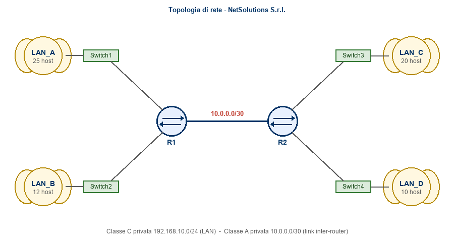

.pkt di Cisco Packet Tracer
contenente l'intera topologia configurata (router, switch, host, interfacce e routing statico).L'azienda NetSolutions S.r.l. ha due sedi collegate da un link geografico punto-punto. Ciascuna sede ospita due reti LAN distinte. Il candidato deve progettare l'indirizzamento e configurare i router con tabelle di routing statiche utilizzando Cisco Packet Tracer.
192.168.10.0/24/30: 10.0.0.0/30
| LAN | Sede | Reparto | Host previsti |
|---|---|---|---|
| LAN_A | Sede 1 | Amministrazione | 25 |
| LAN_B | Sede 1 | Ufficio Tecnico | 12 |
| LAN_C | Sede 2 | Commerciale | 20 |
| LAN_D | Sede 2 | Magazzino | 10 |
Il candidato deve elaborare autonomamente il piano di indirizzamento partendo dalla rete
192.168.10.0/24 per le LAN e dalla rete 10.0.0.0/30 per il link inter-router,
determinando per ciascuna sottorete la maschera più adatta al numero di host previsti.
Una volta progettato il piano, configurare in Packet Tracer, utilizzando esclusivamente l'interfaccia grafica:
Configurare le rotte statiche necessarie a garantire la raggiungibilità tra tutte le LAN
utilizzando esclusivamente l'interfaccia grafica.
Al termine verificare la connettività end-to-end utilizzando il Command Prompt
dei PC con ping tra host appartenenti a LAN differenti.
Argomenti: Reti private e VPN; Sicurezza di reti e sistemi (DMZ).
1) Cos'è una VPN e quali sono le principali differenze tra una VPN ad accesso remoto e una VPN site-to-site?
2) Cosa si intende per DMZ in una rete aziendale e perché viene utilizzata? Indica almeno due servizi tipicamente ospitati in DMZ.
Griglia ad uso del docente per la correzione. Punteggio totale: 10. Il voto è la somma dei punteggi parziali. Sono ammessi anche i quarti di voto (es. 7,25 = 7+ / 8,75 = 9−).
| Sezione | Indicatore | Punti max | Punti assegnati |
|---|---|---|---|
| Parte A Laboratorio (5 pt) |
Piano di indirizzamento — calcolo corretto di network address, subnet mask, primo/ultimo host utile, broadcast e gateway per le 4 LAN e per il link inter-router. Scelta della maschera coerente con il numero di host. | 2,0 | |
| Configurazione interfacce e host — corretta impostazione via GUI di IP, subnet mask e default gateway su interfacce dei router e su tutti i PC; coerenza con il piano elaborato. | 1,0 | ||
Routing statico — rotte statiche corrette su entrambi i router e connettività end-to-end (ping) tra host di LAN differenti. |
2,0 | ||
| Parte B Teoria (5 pt) |
Domanda 1 — VPN: definizione corretta di VPN; distinzione tra accesso remoto e site-to-site; almeno un esempio di protocollo; uso appropriato della terminologia tecnica. | 2,5 | |
| Domanda 2 — DMZ: definizione corretta di DMZ; motivazioni di sicurezza dell'utilizzo (isolamento perimetrale); almeno due servizi tipici correttamente indicati. | 2,5 | ||
| TOTALE | 10,0 | ||
| Livello | Descrittore | Quota del punteggio max |
|---|---|---|
| Ottimo (9-10) | Risposta/realizzazione completa, corretta, ben argomentata e con terminologia precisa. | 100 % |
| Buono (7-8) | Risposta/realizzazione corretta nel complesso con piccole imprecisioni non sostanziali. | 75 % |
| Sufficiente (6) | Contenuti essenziali presenti, con qualche errore o lacuna; il risultato funziona o è comprensibile. | 60 % |
| Insufficiente (4-5) | Errori significativi, configurazione non funzionante o trattazione lacunosa. | 30 % |
| Gravemente insufficiente (1-3) | Sezione non svolta o gravi errori concettuali. | 0-15 % |
Voto finale: ________ /10